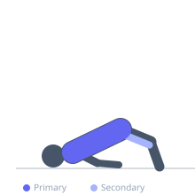
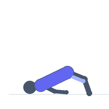

Exercise guide / Supine Neck Bridge
Supine Neck Bridge
The supine neck bridge is performed face-up with the back of the head on the floor, body arched so that the weight is supported through the head and feet, loading the posterior cervical musculature and spinal erectors with significant bodyweight force. It develops exceptional posterior neck strength and spinal flexibility through the held arc position. The supine bridge is a staple conditioning exercise in wrestling, judo, and gymnastics and represents a high-level isometric training stimulus for posterior cervical strength.
Primary muscles
trapezius upper
erector spinae
Secondary muscles
gluteus maximus
hamstrings
Stabilizers
transverse abdominis
Equipment
No Equipment (Bodyweight)


Starting position
- Lie flat on the back on a mat with knees bent. Place the back of the head flat on the mat. Drive through the feet and the back of the head to push the hips and torso into an arched bridge position.
Setup
- This is an ADVANCED exercise. Extensive progressive neck training over months is required before attempting. Begin with hand-assisted holds and progress over time.
Steps
- Step 1: Lie on the back with knees bent, back of the head flat on the mat.
- Step 2: Drive through the feet and push through the head to lift the hips and torso into a bridge.
- Step 3: Use the hands to assist and control how much weight transfers through the neck.
- Step 4: Hold the bridge position for the target duration with as little hand assistance as the neck allows.
- Step 5: Lower under control, using the hands to assist the return.
Coaching cues
- Use your hands as much as you need — build the neck first
- Hips high — don't sag
- Any neck pain = done for the day
Breathing
- Breathe normally during the held position.
Range of motion
- Isometric bridge hold — no movement through range.
Tempo
- Isometric hold: 10-30 seconds with hand assistance as needed
Common mistakes
- Attempting without adequate progressive neck training history
- Forcing the hold without hand assistance before the neck is ready
- Using an overly arched spinal position that strains the lumbar spine
Safety
- Contraindicated with any cervical pathology, disc issues, or cervical instability
- Must be preceded by consistent progressive neck training over months
- Always use significant hand assistance initially
- Any pain = immediately return to the floor
Training
- strength: 1–3 reps
- strength: 2–3 sets
- Rest: {'strength': 120}